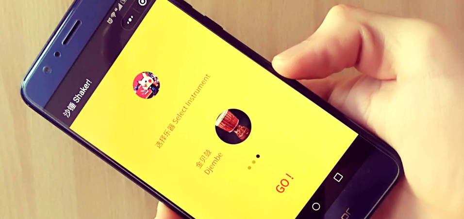
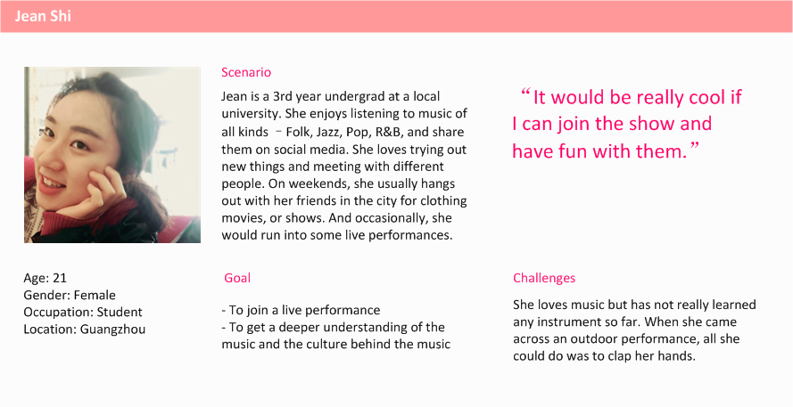
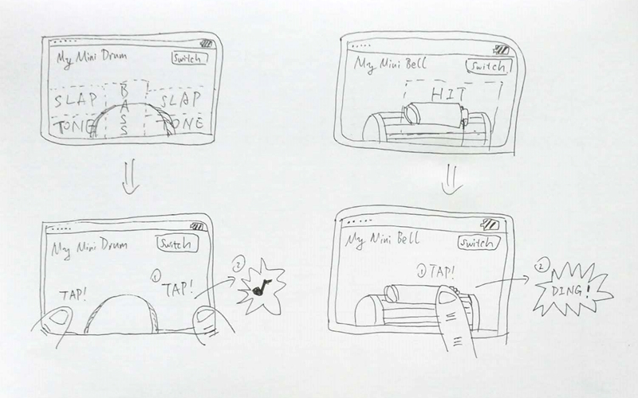
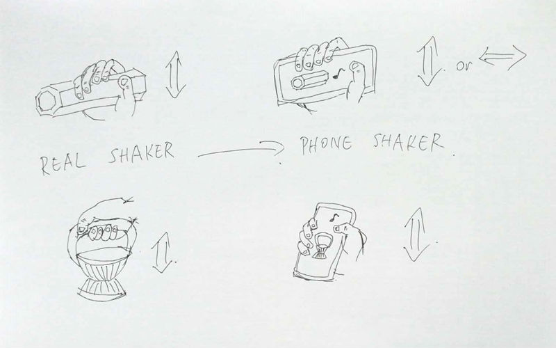
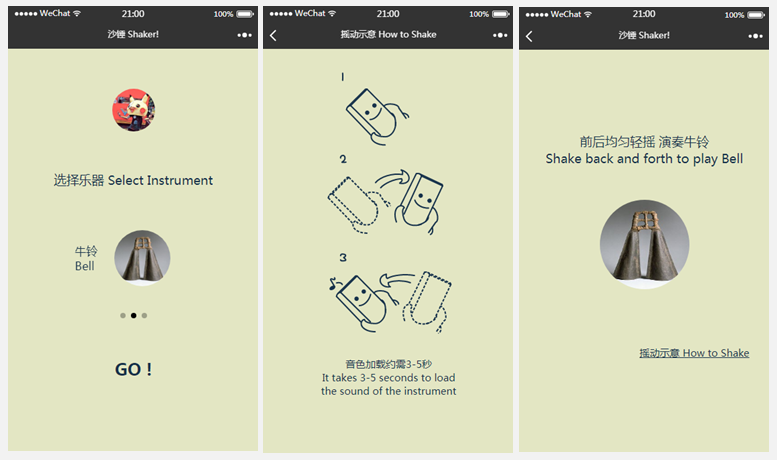
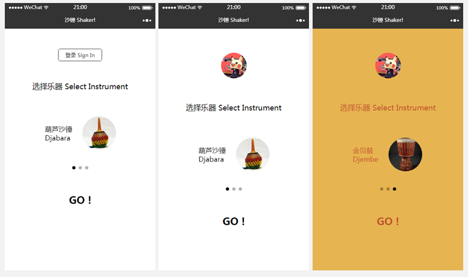

Dec 2017 - May 2018
Photoshop, WeChat Mini Program SDK
Developer, Interaction Design
Shaker! is a WeChat Mini Program that allows you to use your phone as a shaker. It originated from a talk between me and Jet Lam, a co-founder of Fiesta Djembe Club in China, after an open-air performance at Flower City Square, Guangzhou. We noticed that although many of the audiences seemed to enjoy our show, only a few actually came to us and expressed their interests in the Mandingue music we played. In response, I suggested that we could make an app to strengthen the tie between us and the audience.
The app was launched in Dec 2017. Until May 2018, it had over 3k UVs, and it successfully connected over 200 people with our djembe club and turned them into djembe players.
To understand what stopped the audiences from interacting with us and what might arouse their curiosity, I conducted some interviews and made several observations along our outdoor performances. The following problems were revealed:
The interviews were conducted between me and my students (who were part of the audience). We talked about when & where they first met this kind of music, what was their first impression, and what eventually brought them to our club to begin learning. They either noted that it would be great if we had provided them something to play with, like a small instrument, or some materials/video links about the music we played, so that they didn’t have to search it back home. They also noted that they might feel more comfortable to join if everybody played together.
We had 1-2 performances per month on average, so this gave me quite some chances to really observe what the audiences were doing during our gigs. Most of the times they would start by taking pictures or videos, and afterwards, some would start to clap their hands along with the beat. I asked my teammates to engage the audience in different ways, and it was encouraging to see that those who were shy or hesitate to join at the beginning could end up having fun with simply a water bottle or a plastic bag with people around them. However, the phones in their hand seemed getting in their way for full-hearted participation.
Also, the participation rates among people in different age groups were noticeably different – the rate of youngsters would usually soar after our engagement, but it mostly stayed the same for elder generations.
The findings in user research led to the idea of a portable instrument app that is available to every audience, especially the youngsters, at the scene. I created a persona to determine the main problem to focus on and the value it could bring.
This persona, Jean, is based on the user research results. She is a millennial music lover, and wants to explore and try new genres of music she discovers in her life.

Paper prototypes were created to communicate the initial design with potential users – new audiences and students, to determin what kind of intruments should be included in the app. There were a vast number of instruments to choose from, even within the Mandingue Music family. Based on users' feedback, I picked three instruments that were both iconic and somewhat seemed familiar to the users – Djabara, Bell, and Djembe.
In considering how to play an instrument on a phone, I checked with some popular instrument apps on the market and found that most of them used tapping/touching as the primary way of interaction. Noticing that many phones were embedded with gyroscopes or gravity sensors, I added a shaker design that would ask users to shake their phones to play a sound.
The shaker design turned out to be the favored option of potential users because they thought it was more interesting to play it like an actual instrument, and it did not require staring at the screen during a live performance.


Once settled on the shaker design, I made some revisions and designed a working high-fidelity prototype based on the feedback.
Three pages were included – the Index (and instrument selection) page, the How to Shake page, and the Play page in the design. The goal was to make it as easy to use as possible, so that a user could turn his/her phone into a shaker in 3 seconds and be part of a live performance immediately.


Usability tests were run to identify improvements. The order of pages was changed, and the algorithm to play the sound of the instrument according to physical movements of the phone were adjusted for better performance and accuracy.
The trail version of this WeChat mini program was launched on middle December 2017, and I am very glad that it has successfully turned a number of people into Mandingue music lovers – they called it “a mini Christmas gift from West Africa”.
This application is still evolving. If you are a WeChat user, try searching “shaker” in Mini Program and let me know your thoughts.